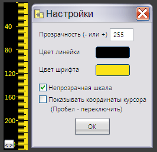

Straightedge
Назначение
Линейка, измеряет объекты на экране в пикселях. Её можно повернуть на 90 градусов или отзеркалить любой стороной.

Линейка - утилитка для измерения элементов интерфейса на экране монитора. Для веб-дизайнеров и программистов. Линейку можно перемещать мышкой или стрелками клавиатуры с точностью до пикселя. В контекстном меню можно установить цвет шрифта, линейки и прозрачность. Горячими клавишами 2 (Отразить) и 1 (Повернуть на 90 градусов) удобно управлять линейкой. Вертикальное и горизонтальное положение линейки, а также Отражение и длина сохраняется независимо друг от друга.
Горячие клавиши:
"1" - Повернуть на 90 градусов (переключение между вертикальной и горизонтальной линейкой)
"2" - Отразить (шкала с другой стороны)
"0" - Установить начало к краям экрана
"+" - Увеличить непрозрачность на 10
"-" - Уменьшить непрозрачность на 10
"Пробел" - вкл/откл отображение координат возле курсора
"7" - отправить координаты в буфер обмена
"8" - отправить координаты и размер в буфер обмена
Например, ставим курсор на левый верхний и жмём 7, далее ставим курсор на правый нижний угол и жмём 8. Получаем в буфер обмена координаты и размер прямоугольника в формате "x, y, w, h", где x, y - координаты относительно начала линейки, w, h - ширина и высота прямоугольника, образованного сторонами углов
Стрелками клавиатуры линейка перемещается в соответствующих направлениях.